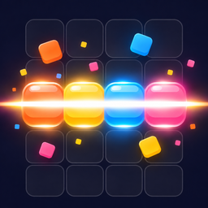
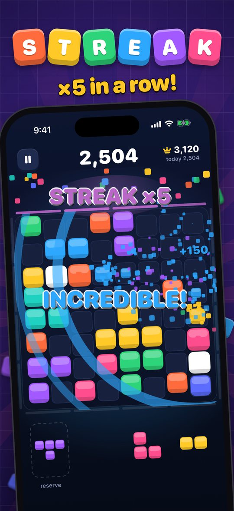
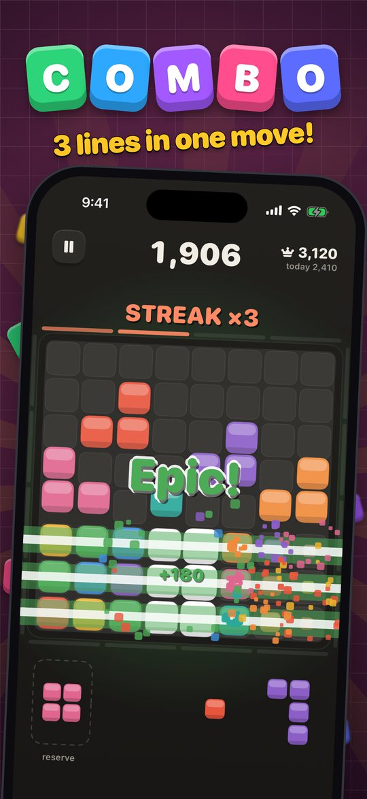
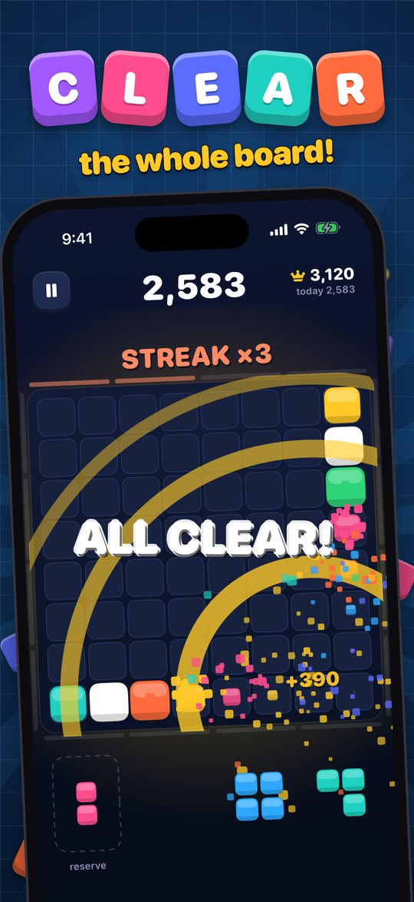
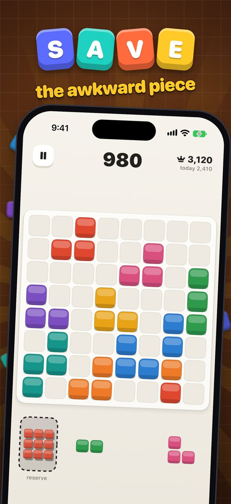

Kvadro
Block puzzle with a spare slot. / Головоломка з блоками і резервом.
Download on the App Store



In English
- Drag a piece onto the 8×8 board, fill a row or column and watch it blast away.
- Clear lines on back-to-back moves to build a streak — ×2, ×3 and up, with points multiplying.
- A piece fits nowhere? Tuck it into the reserve slot and bring it back when there's room.
- Daily and weekly highs, your top five games and a Game Center leaderboard.
- Three color themes. Plays offline, no account needed.
Українською
- Перетягни фігуру на поле 8×8, заповни рядок чи стовпець — і він вибухне.
- Очищуй лінії хід за ходом, і серія росте: ×2, ×3 і далі, а очки множаться.
- Фігура нікуди не влазить? Відклади її в резерв і поверни, коли з'явиться місце.
- Рекорд дня й тижня, п'ять найкращих партій і таблиця лідерів Game Center.
- Три кольорові теми. Працює без інтернету й без акаунта.
Підтримка / Support · Privacy Policy · someoneswifty@gmail.com